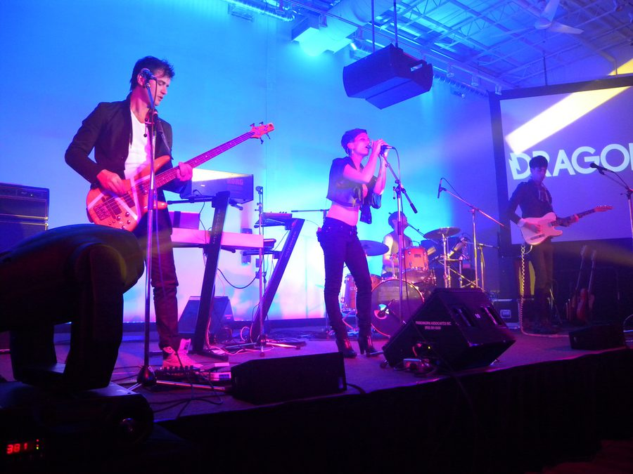

Dragonette join the Stereosonic lineup



As if the Stereosonic lineup wasn’t big enough already… Organisers Hardware and Onelove are giving us even more lineup love, this time with more of an indie-dance vibe. Dragonette are a Canadian act who were last here for Parklife last year, and they’ve since been in the studio nailing down their debut album Fixin To Thrill, which will see the light of day in early October.
Led by the charismatic charms of frontwoman Martina Sorbara, who you might also know for her work on Basement Jaxx’s Take Me Back To Your House, the four-piece have been enjoying the high-life since they last toured Australia, playing sell-out gigs right across their home country as well as international festivals like Glastonbury and Summercase in Spain.
As well as playing the Steresonic tour around the country, which is quickly turning into the summer’s most anticipated festival, Dragonette will also be launching their new album on our soil so you’ll be sure to ser them running around performing a wide range of promotional commitments, and perhaps a few sneaky secret gigs here and there.
Check out the clip for Dragonette’s single Fixin To Thrill...
inthemix is a proud presenting partner of Stereosonic in 2009! Keep your eyes peeled to our Festival Page at inthemix.com.au/stereosonic and check out the national tour dates below…
Sat 28th November – Moore Park, Hordern, RHI & Surrounds, Sydney
Sun 29th November – Claremont Showground, Perth
Sat 5th December – Royal Melbourne Showgrounds, Melbourne
Sun 6th December – Eagle Farm Racecourse, Brisbane